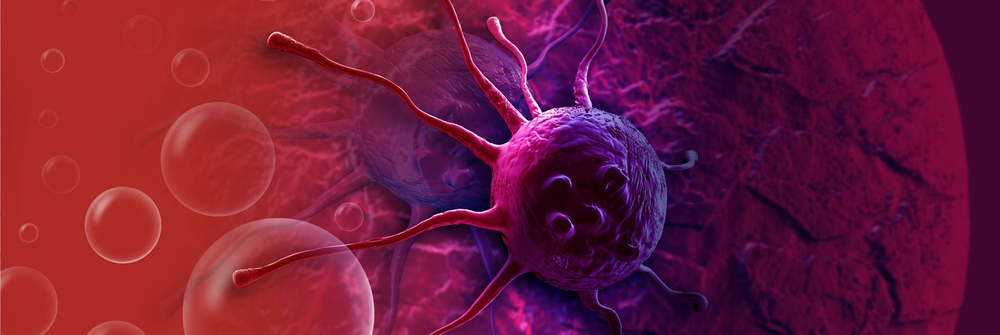
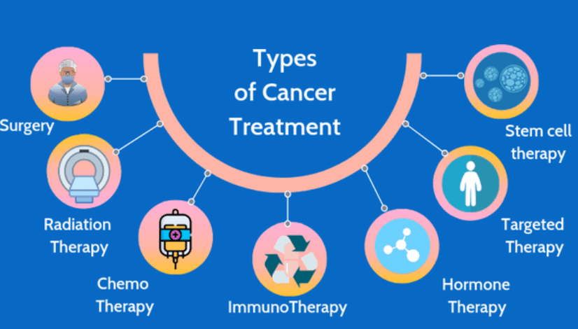

Cancer have so many type.for example:
Bladder Cancer.
Breast Cancer
Kidney Cancer.
Lung Cancer - Non-Small Cell.
Lymphoma - Non-Hodgkin.
Melanoma.
Oral and Oropharyngeal Cancer.
Cancer is the second-leading cause of death worldwide.
10 million people die from cancer every year.
More than 40% of cancer-related death could be preventable as they are linked to modifiable risk factors such as smoking, alcohol use, poor diet and physical inactivity.
Possible symptoms for Cancer
Cancer can cause many symptoms, but these symptoms are most often caused by illness, injury, benign tumors, or other problems. ...
Bladder changes.
Bleeding or bruising, for no known reason.
Bowel changes.
Cough or hoarseness that does not go away.
Eating problems.
Fatigue that is severe and lasts.

If your doctor recently told you that you have cancer, he or she may have recommended certain kinds of treatment. The best cancer treatment for you depends on-
The kind of cancer you have.
How far the cancer has spread in your body. This is called the stage.
When recommending treatment, your doctor will also keep in mind your age and any other health problems you may have.
Cancer treatment is based on the stage of the cancer. Sometimes, treatment is meant to cure the cancer. Other times, the goal is to stop the cancer from spreading further. Some treatments may be given to reduce side effects of other treatments and make you more comfortable. This is called palliative care. Palliative care can be given at any stage of your cancer treatment, even if your cancer is treatable. Your treatment plan may change over time.
Common Types of Cancer Treatment
Cancer treatment may include—
Surgery: An operation where doctors cut out tissue with cancer cells.
Chemotherapy: Special medicines that shrink or kill cancer cells.
Radiation therapy: Using high-energy rays (similar to X-rays) to kill cancer cells.
Hormone therapy: Blocks cancer cells from getting the hormones they need to grow.
Immunotherapy: A treatment that works with your body’s immune system to help it fight cancer cells or to control side effects from other cancer treatments.
Stem cell transplant (bone marrow transplant): Replace bone marrow cells lost due to very high doses of chemotherapy or radiation therapy. Most commonly used to treat blood cancers and cancers in lymph nodes.
Choosing the treatment that is right for you may be hard. Talk to your cancer doctor about the treatments for your kind and stage of cancer. Your doctor can explain the risks and benefits of each treatment, and their side effects.
